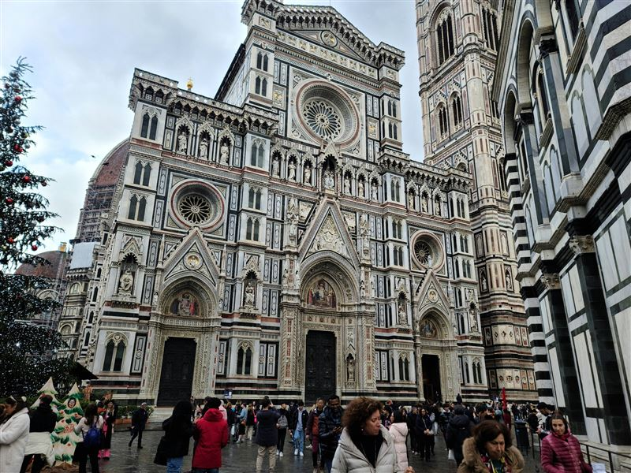
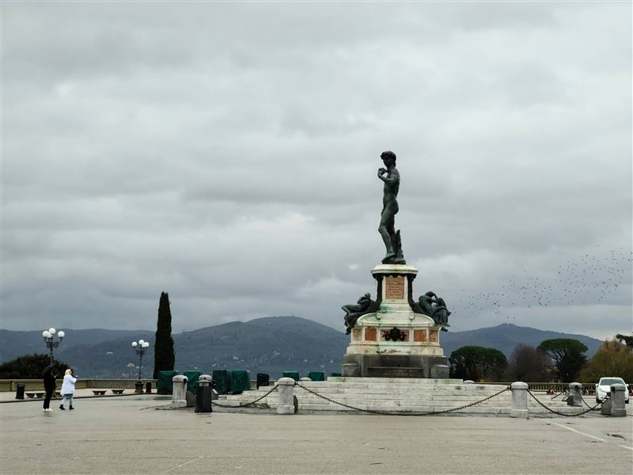
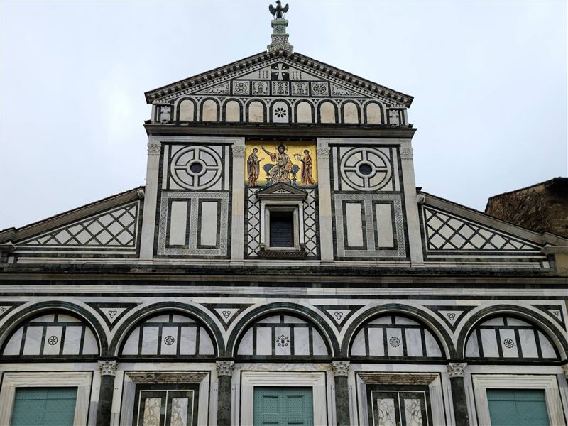
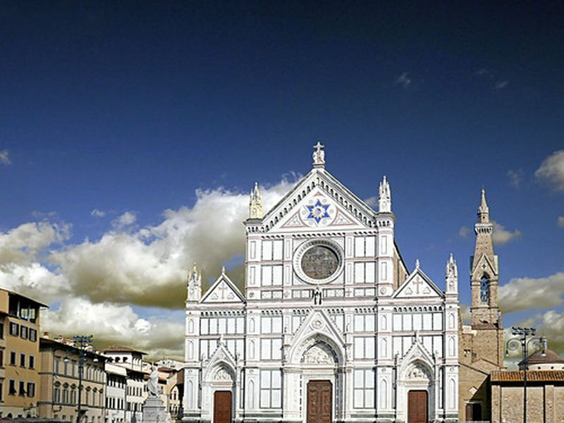
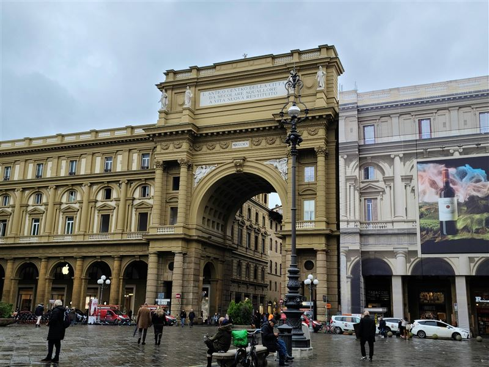
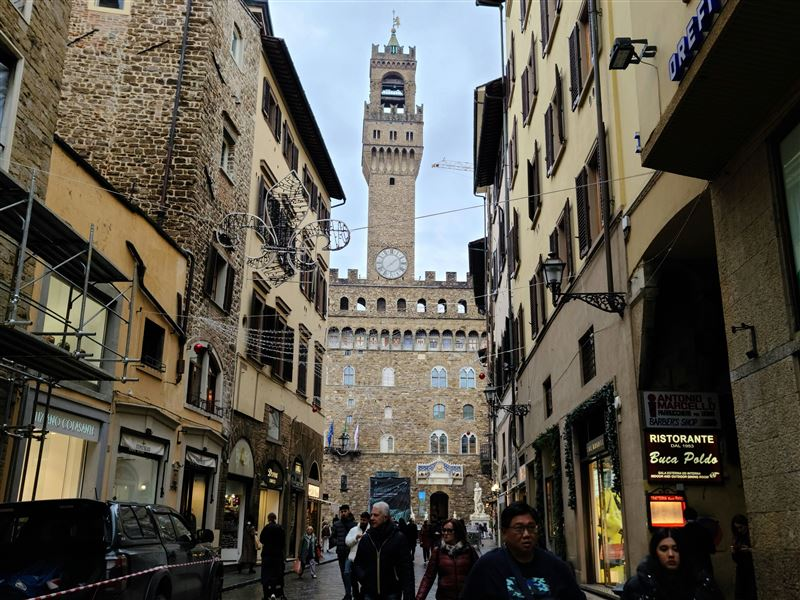
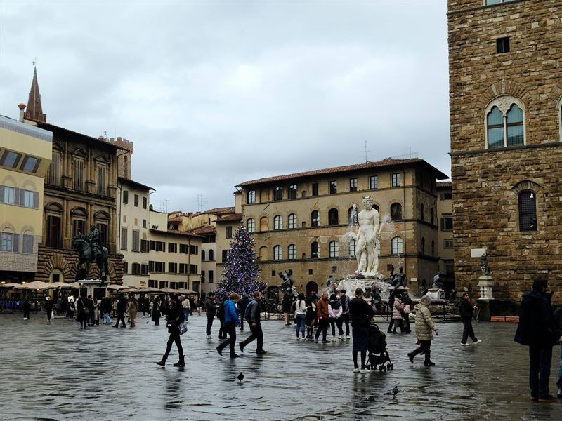
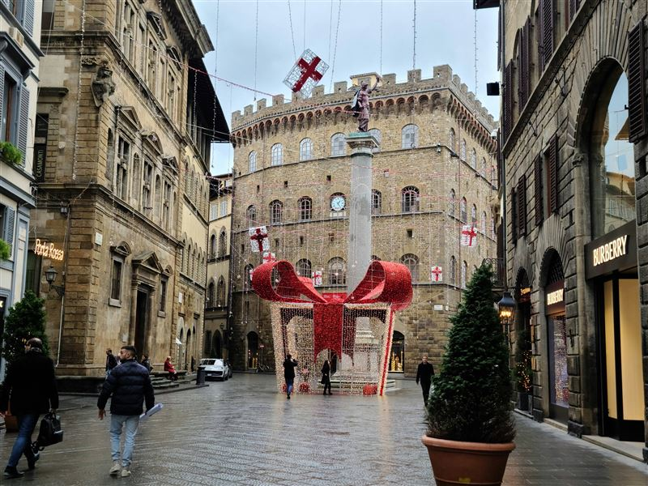
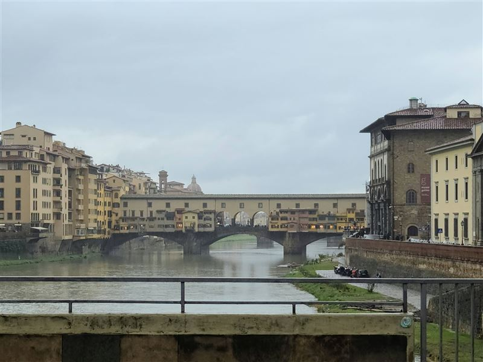

Explore Florence
A Brief History
Florence emerged as a major commune in medieval Tuscany, expanding through banking, wool trade, and republican government before the Medici consolidated ducal rule in the 16th century. Its cathedral dome, palaces, guild churches, and civic squares preserve the political and artistic landscape of the Renaissance. Figures such as Dante, Brunelleschi, and Michelangelo shaped the city's global cultural reputation.
Attractions Map
Top Sights & Activities

Cathedral of Santa Maria del Fiore
Florence Cathedral was begun in 1296 and completed across several centuries, with Brunelleschi's dome added in the 15th century. The church became the main religious monument of the republic and remains central to the city's skyline and civic identity.

Piazzale Michelangelo
Piazzale Michelangelo was laid out in the 19th century on the south side of the Arno as a panoramic terrace above Florence. The square became one of the main viewpoints for the historic skyline and river crossings.

Basilica di San Miniato
San Miniato al Monte is a Romanesque basilica on the hill above Florence, built over earlier religious foundations and closely tied to the cult of Saint Minias. Its facade, choir, and hilltop setting make it one of the major historic churches of the city.

Basilica di Santa Croce di Firenze
Santa Croce was founded for the Franciscans in the late 13th century and became a major burial church for notable Italians including Michelangelo and Galileo. Frescoes, chapels, and tombs connect the basilica with Florence's religious and intellectual history.

Piazza della Repubblica
Piazza della Repubblica took its present form during 19th-century redevelopment after Florence became capital of unified Italy. The square occupies the site of the Roman forum and marks the shift from medieval street fabric to modern boulevards and arcades.

Palazzo Vecchio
Palazzo Vecchio was begun in 1299 as the seat of Florence's republican government. It later served Medici rulers and now houses the mayor's offices and museum rooms that record the political life of the city from the communal period onward.

Piazza della Signoria
Piazza della Signoria formed around the civic heart of the Florentine republic and remains tied to Palazzo Vecchio, Loggia dei Lanzi, and a long tradition of public sculpture. The square has functioned as a political and ceremonial space since the medieval period.

Palazzo Strozzi
Palazzo Strozzi was built from the late 15th century for the Strozzi family and is one of the main Renaissance palaces of Florence. Its courtyard and rusticated exterior show the city's elite domestic architecture, while the building now hosts cultural exhibitions.

Ponte Vecchio
Ponte Vecchio spans the Arno on foundations that took shape after medieval rebuilding in 1345. The bridge became known for its rows of shops and for the Vasari Corridor above, linking civic Florence with Medici court spaces across the river.